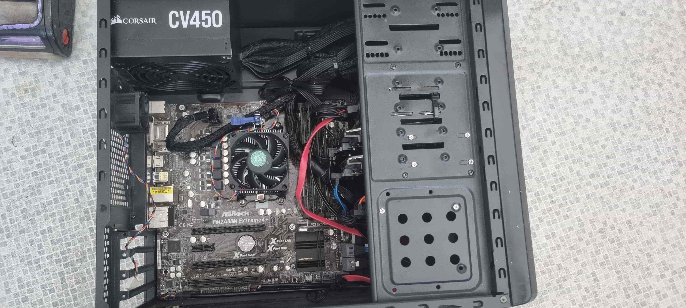
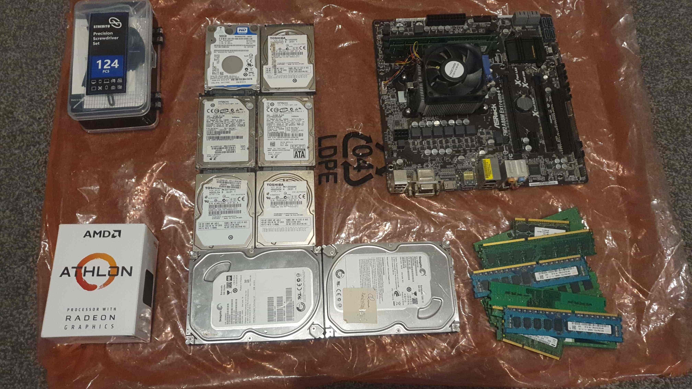
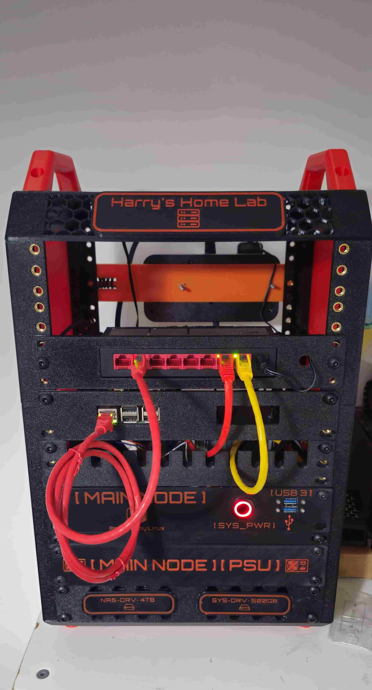

Projects / Debian Homelab Server
Debian Homelab Server
My interest in building and managing my own homelab started with something relatively simple: upgrading an old computer. I quickly discovered that I really enjoyed the process of taking computers apart, replacing components, building systems from scratch and getting everything working. Over time, I rebuilt my computer several times, experimenting with different hardware configurations and learning more about how computers operate.
Overview
This project outlines the setup and management of my Debian home server, hosting multiple self-hosted services through Docker containers, providing a centralised platform for media streaming, network services and security monitoring.
What I did
My interest in building and managing my own homelab started with something relatively simple: upgrading an old computer. I quickly discovered that I really enjoyed the process of taking computers apart, replacing components, building systems from scratch and getting everything working. Over time, I rebuilt my computer several times, experimenting with different hardware configurations and learning more about how computers operate.
As my interest grew, I began experimenting with different operating systems on my old hardware, moving beyond Windows and exploring Linux distributions and server operating systems. This eventually led me to repurpose my old computer into a storage server (NAS). I believe one of my earliest setups used OpenMediaVault, which introduced me to network-attached storage, file sharing and running services independently of a traditional desktop computer. I also began experimenting with media streaming platforms such as Plex and self-hosted music services, allowing me to access my own media across different devices around my home.
After receiving a Raspberry Pi 3 for my birthday, I decided to explore running my homelab on a much smaller and more energy-efficient platform. I installed the necessary software and configured it to operate as my main home server, using an external hard drive for storage.
For a while, this became the central point for my NAS and media streaming services. It was an excellent opportunity to learn about the capabilities of single-board computers, Linux administration, storage management and running services on limited hardware resources.
Eventually, I returned to my original computer and decided to turn it back into a dedicated server. This time, I expanded its storage capacity with additional hard drives and began experimenting with Docker containers to host a wider range of applications.
I introduced several new services, including self-hosted note-taking applications and Wazuh for security monitoring. This was where my homelab started becoming much more than a simple NAS and media server. I was beginning to explore containerisation, system monitoring, cybersecurity and managing multiple services within a single environment.
Throughout this period, I went through numerous hardware and software configurations, constantly experimenting with different operating systems, applications and server setups. Although I cannot remember every individual configuration I used along the way, each iteration taught me something new and helped me understand how to build a more capable and reliable infrastructure.
A significant turning point came when I was generously donated a large amount of computer hardware through a connection I made via a friend. This included hard drives, motherboards, processors, power supplies, a Dell PowerEdge server, older tablets and various other components.
Having access to this equipment gave me the opportunity to experiment with hardware I might not otherwise have been able to afford.
After exploring the available components, I selected an Intel Core i5-6500 processor and compatible motherboard to become the foundation of my next homelab server. This provided a substantial performance improvement over my previous Raspberry Pi 3 and older AMD-based system, giving me considerably more headroom to run multiple services simultaneously.
This hardware became the foundation of the homelab infrastructure I continue to develop today.
Over time, I have continued expanding and refining the environment, eventually establishing a Debian-based home server running multiple self-hosted services through Docker containers.
Some of the services I currently run include:
Jellyfin: Self-hosted media streaming, allowing me to organise and stream my own film and television collection across devices.
Swing Music: A self-hosted music streaming platform, giving me access to my own personal music library without relying on third-party streaming services.
Immich: A self-hosted photo and video management platform. I migrated my personal photo library from Google Photos, allowing me to manage and access my collection locally.
Home Assistant: A home automation platform used to integrate smart devices, automate tasks and experiment with building a smarter home.
Nginx Proxy Manager: Configured as a reverse proxy to manage domain-based access to my self-hosted services.
Wazuh: Security monitoring to collect and analyse security events and identify potential vulnerabilities across my systems.
Glances: System monitoring to observe server health, including CPU, memory, storage and network utilisation.
Mosquitto MQTT: A message broker used to facilitate communication between my own DIY smart doorbell and Home Assistant.
Alongside these, I run various additional services to support the infrastructure and continue experimenting with new applications and technologies.
Another significant addition to my homelab has been the development of my own Power over Ethernet (PoE) CCTV system, which I have documented separately in this portfolio.
I integrated the camera system with Frigate NVR, running within a Docker container on my server. This allows me to pull live camera streams into a centralised dashboard, manage local video recording and utilise AI-powered object detection.
This project also involved configuring network-connected cameras, creating custom Ethernet cables and integrating the CCTV infrastructure with my existing server environment.
After going through numerous iterations of my homelab, both in terms of hardware and software, I eventually began working towards a more organised and purpose-built setup.
This led me to design and 3D print my own 10-inch 6U homelab rack, including custom components and mounting panels. Rather than simply placing my server equipment wherever there was space, I wanted to create a more structured installation that could accommodate my hardware and allow for future expansion.
I've documented the design, printing and assembly process in a separate project within this portfolio.
What I learned
What started as upgrading an old computer has gradually developed into a long-term personal project involving Linux system administration, networking, virtualisation, storage management, cybersecurity, Docker containerisation, hardware configuration and home automation.
One of the things I enjoy most about maintaining my homelab is that there is always something new to learn. Whether I'm troubleshooting a service that has stopped working, configuring a new application, investigating a networking issue or experimenting with different hardware, I'm constantly developing my technical knowledge through practical experience.
Most importantly, I've learned how to research unfamiliar technologies, work through problems independently, adapt when something doesn't work as expected and build solutions using the equipment available to me.
My homelab continues to evolve, and I see it as an ongoing learning environment rather than a finished project. It has played a major part in developing my interest in IT and is one of the reasons I've decided to pursue a career in IT support and systems administration.
Gallery
First Homelab Server
My first homelab setup, built using an old computer that I repurposed into a home server. This was where I started experimenting with Linux, network storage and self-hosted services.

Equipment I was donated
This photo shows a small selection of the hardware and components I received through donated equipment. The main items I was given were the collection of hard drives and RAM modules shown, which provided additional storage and memory for my homelab projects. The wider donation also included a Dell PowerEdge R210 server, several server motherboards, a Windows tablet, a PDU (Power Distribution Unit), a hot-swappable server power supply, an empty server rack, numerous CPUs, a small low-powered PC and various other hardware components. Some of the other components pictured were already part of my own collection. Having access to such a wide range of donated equipment gave me the opportunity to experiment with different hardware, upgrade existing systems and explore server infrastructure without having to purchase every component myself.

Second Homelab Setup
My second homelab server was built around an Intel i5-6500 processor and motherboard that I received as donated hardware. This was a significant upgrade from my earlier setups, giving me more processing power and room to expand. I installed Debian 12 alongside CasaOS, which provided a graphical interface for managing the server and its applications.
I began hosting a wider range of services, including Jellyfin for media streaming, Swing Music for music streaming, Immich for photo storage, Home Assistant for home automation, Wazuh for security monitoring and Glances for system monitoring. I also set up Nginx Proxy Manager to manage access to my hosted services through domain names. During this stage, I started experimenting with Docker Compose, learning how to define, deploy and manage multiple containerised applications.
The Raspberry Pi 3, also shown in the image, continued to play an important role in my homelab. I used it to run AdGuard Home for network-wide ad and tracker blocking, as well as Tailscale as a subnet router. This allowed me to securely access devices across my home network remotely when away from home, without exposing those services directly to the internet.
This setup became the foundation for a much more capable and versatile homelab, combining dedicated server hardware with a separate Raspberry Pi for network services and secure remote access.

AI + GPU Experiment
I purchased a low-cost, second-hand NVIDIA GeForce GTX 960 to experiment with GPU passthrough and explore different GPU-accelerated workloads within my homelab. I installed the graphics card into my second homelab server chassis and began experimenting with Proxmox VE, configuring GPU passthrough to virtual machines running both Windows and Linux. This allowed me to explore how dedicated hardware could be assigned directly to virtual machines, as well as learn more about virtualisation, hardware compatibility and GPU configuration.
I also experimented with AI-powered image upscaling using chaiNNer, exploring how GPU acceleration could be used to process and enhance lower-resolution images. I tested different workflows, software configurations and processing options to see how the graphics card handled these workloads.
Rather than following a fixed project or building a system for one specific purpose, this was an opportunity to experiment with different technologies, try out new software and learn through hands-on testing. It helped me develop a better understanding of Proxmox virtualisation, GPU passthrough, Linux and Windows environments, and the practical applications of GPU acceleration for AI workloads.

Dell Power Edge R210 Experiment
My Dell PowerEdge R210 server, which I received as donated hardware, became my introduction to dedicated server hardware and virtualisation. I installed Proxmox VE, a type-1 hypervisor, allowing me to run multiple isolated environments on a single physical machine. This was where I began experimenting with virtual machines (VMs) and Linux Containers (LXC), learning how to allocate hardware resources, install different operating systems and manage separate services independently. I also spent considerable time experimenting with GPU passthrough, learning how to assign a physical graphics card directly to a virtual machine and troubleshoot the hardware and configuration challenges involved. I used this setup to explore virtualisation, test different configurations and develop my understanding of server management without needing separate physical machines for each task. This project gave me valuable hands-on experience with Proxmox, virtual machines, LXC containers and hardware passthrough.


Third Homelab Setup
My third homelab setup, where I brought together two servers: my Dell PowerEdge R210 and my Intel i5-6500-based server. I used the Dell PowerEdge R210 as my primary Proxmox VE server, hosting my virtualised environment and running the majority of my services and Docker-based applications. Alongside this, I configured my i5-6500 server as a secondary Proxmox machine, giving me an additional server to experiment with and providing a separate environment alongside my main setup. This was another step in developing my understanding of multi-server environments, virtualisation and resource management. Running two Proxmox servers also allowed me to explore different configurations and understand how multiple physical machines could work together within a homelab.

Fourth Homelab Setup
My fourth homelab server setup involved taking the Intel i5-6500 motherboard and processor from my previous build and transferring them into a smaller, more compact Micro-ATX case. I also switched to a much smaller power supply rated at approximately 200W, helping reduce the overall size and power requirements of the system. This allowed me to retain the same hardware and performance while making the server considerably more space-efficient and easier to fit into my homelab.
I also put additional effort into organising the external cabling behind the setup, using zip ties to neatly bundle and secure the cables. This created a tidier appearance, reduced cable clutter and helped minimise potential safety hazards caused by loose or trailing cables.
I decided to keep my Raspberry Pi 3 as a separate part of the setup because it continued to serve an important role within my home network. It ran AdGuard Home to provide network-wide ad and tracker blocking, alongside Tailscale configured as a subnet router. This gave me a dedicated device for network-wide filtering and secure remote access to my home network, without needing to move these services onto my main server.
This rebuild gave me another opportunity to develop my practical skills in PC building, hardware compatibility, power requirements and cable management, while continuing to build on the network infrastructure I had established in my earlier homelab setups.

Fifth/Current Homelab Setup
This is my fifth and current homelab setup, bringing together my Debian-based server and wider home network infrastructure. The main server is built around an Intel Core i5-6500 motherboard with 16GB of DDR4 RAM, a 500GB HDD used as the boot drive and a recently purchased 4TB Seagate IronWolf NAS drive, which I managed to buy before storage prices increased significantly.
The server hosts several self-hosted services through Docker, including Jellyfin for media streaming, Swing Music for music streaming, Immich for photo management, Home Assistant for home automation and Nginx Proxy Manager for managing access to my services. I also use Glances to monitor server performance and Wazuh to monitor my gaming PC, Linux laptop and homelab server for security events, vulnerabilities and suspicious activity.
Alongside the main server, I use a Raspberry Pi running AdGuard Home to provide network-wide ad and tracker blocking. The Pi also acts as a Tailscale subnet router, allowing me to securely access devices and services across my entire home network from anywhere in the world. This includes remotely accessing my CCTV system through Frigate NVR, allowing me to view my camera feeds and recordings while away from home, even when connected to an untrusted public Wi-Fi network, such as in a coffee shop.
The entire setup is housed in a custom 3D-printed server rack based on the Lab Rax design from MakerWorld. I designed several of my own custom panels using Autodesk Fusion 360, including the main server/node panel featuring a custom power button and USB 3.0 ports, a front panel designed to enclose and house the PSU for my main i5-6500 system, and a dedicated front panel to house the 500GB boot drive and 4TB NAS drive. I have documented the rack design, custom panels, 3D printing and assembly separately in another project within this portfolio.
View the Lab Rax design on MakerWorld



.jpg)
.jpg)